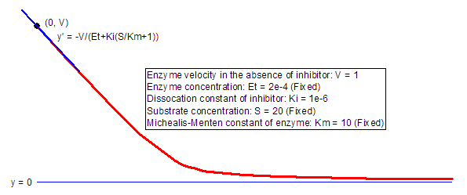

TightInhib-FitFunc
強固結合型阻害剤に対するモリソン方程式。

パラメータ数: 5
パラメータ名: V, Et, Ki, S, Km
意味： V = 阻害剤非存在下での酵素反応速度、Et = 酵素濃度、Ki = 阻害剤の解離定数、S = 基質濃度、Km = 酵素のMichaelis-Menten定数
下側境界: なし
上側境界: なし
nlf_TightInhib(x,V,Et,Ki,S,Km)
TightInhib.fdf
Enzyme Kinetics
 + x - \sqrt{-4E_t x + (E_t + K_i(S/K_m + 1) + x)^2}}{2E_t} + 1\right)")